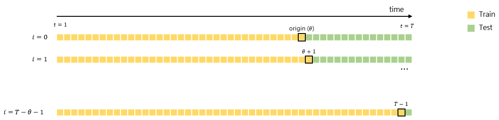
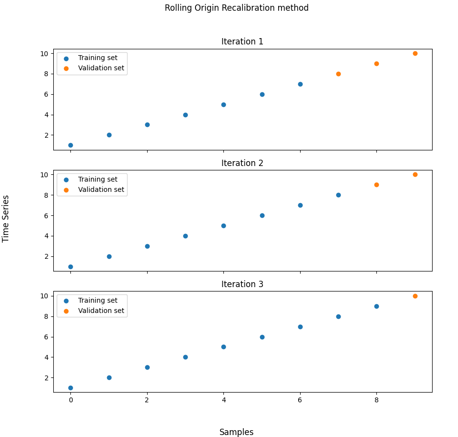

Rolling Origin Recalibration method
timecave.validation_methods.OOS.RollingOriginRecalibration(ts, fs=1, origin=0.7)
Bases: BaseSplitter
Implements the Rolling Origin Recalibration method.
This class implements the Rolling Origin Recalibration method. This method splits the data into various training and validation sets. Neither the training sets nor the validation sets are disjoint. At every iteration, a single data point is dropped from the validation set and added to the training set.
Parameters:
| Name | Type | Description | Default |
|---|---|---|---|
ts |
ndarray | Series
|
Univariate time series. |
required |
fs |
float | int
|
Sampling frequency (Hz). |
1
|
origin |
int | float
|
The point from which the data is split. If an integer is passed, it is interpreted as an index. If a float is passed instead, it is treated as the percentage of samples that should be used for training. |
0.7
|
Attributes:
| Name | Type | Description |
|---|---|---|
n_splits |
int
|
The number of splits. |
sampling_freq |
int | float
|
The series' sampling frequency (Hz). |
Methods:
| Name | Description |
|---|---|
split |
Split the time series into training and validation sets. |
info |
Provide additional information on the validation method. |
statistics |
Compute relevant statistics for both training and validation sets. |
plot |
Plot the partitioned time series. |
Raises:
| Type | Description |
|---|---|
TypeError
|
If |
ValueError
|
If |
ValueError
|
If |
Warning
Depending on the time series' size, this method can have a large computational cost.
See also
Rolling Origin Update: Similar to the Rolling Origin Recalibration method, but the model is only trained once.
Notes
The Rolling Origin Recalibration method consists of splitting the data into a training set and a validation set, with the former preceding the latter. At every iteration, a single data point (the one closest to the training set) is dropped from the validation set and added to the training set. The model's performance is then assessed on the new validation set. This process ends once the validation set consists of a single data point. The estimate of the true model error is the average validation error across [over] all iterations.

For more details on this method, the reader should refer to [1].
References
1
Leonard J Tashman. Out-of-sample tests of forecasting accuracy: an analysis and review. International journal of forecasting, 16(4):437–450, 2000.
Source code in timecave/validation_methods/OOS.py
info()
Provide some basic information on the training and validation sets.
This method displays the minimum and maximum sizes for both the training and validation sets.
Examples:
>>> import numpy as np
>>> from timecave.validation_methods.OOS import RollingOriginRecalibration
>>> ts = np.ones(10);
>>> splitter = RollingOriginRecalibration(ts);
>>> splitter.info();
Rolling Origin Recalibration method
-----------------------------------
Time series size: 10 samples
Minimum training set size: 7 samples (70.0 %)
Maximum validation set size: 3 samples (30.0 %)
Maximum training set size: 9 samples (90.0 %)
Minimum validation set size: 1 samples (10.0 %)
Source code in timecave/validation_methods/OOS.py
plot(height, width)
Plot the partitioned time series.
This method allows the user to plot the partitioned time series. The training and validation sets are plotted using different colours.
Parameters:
| Name | Type | Description | Default |
|---|---|---|---|
height |
int
|
The figure's height. |
required |
width |
int
|
The figure's width. |
required |
Examples:
>>> import numpy as np
>>> from timecave.validation_methods.OOS import RollingOriginRecalibration
>>> ts = np.arange(1, 11);
>>> splitter = RollingOriginRecalibration(ts);
>>> splitter.plot(10, 10);

Source code in timecave/validation_methods/OOS.py
split()
Split the time series into training and validation sets.
This method splits the series' indices into disjoint sets containing the training and validation indices.
At every iteration, an array of training indices and another one containing the validation indices are generated.
Note that this method is a generator. To access the indices, use the next() method or a for loop.
Yields:
| Type | Description |
|---|---|
ndarray
|
Array of training indices. |
ndarray
|
Array of validation indices. |
float
|
Used for compatibility reasons. Irrelevant for this method. |
Examples:
>>> import numpy as np
>>> from timecave.validation_methods.OOS import RollingOriginRecalibration
>>> ts = np.ones(10);
>>> splitter = RollingOriginRecalibration(ts);
>>> for ind, (train, val, _) in enumerate(splitter.split()):
...
... print(f"Iteration {ind+1}");
... print(f"Training set indices: {train}");
... print(f"Validation set indices: {val}");
Iteration 1
Training set indices: [0 1 2 3 4 5 6]
Validation set indices: [7 8 9]
Iteration 2
Training set indices: [0 1 2 3 4 5 6 7]
Validation set indices: [8 9]
Iteration 3
Training set indices: [0 1 2 3 4 5 6 7 8]
Validation set indices: [9]
Source code in timecave/validation_methods/OOS.py
statistics()
Compute relevant statistics for both training and validation sets.
This method computes relevant time series features, such as mean, strength-of-trend, etc. for both the whole time series, the training set and the validation set. It can and should be used to ensure that the characteristics of both the training and validation sets are, statistically speaking, similar to those of the time series one wishes to forecast. If this is not the case, using the validation method will most likely lead to a poor assessment of the model's performance.
Returns:
| Type | Description |
|---|---|
DataFrame
|
Relevant features for the entire time series. |
DataFrame
|
Relevant features for the training set. |
DataFrame
|
Relevant features for the validation set. |
Raises:
| Type | Description |
|---|---|
ValueError
|
If the time series is composed of less than three samples. |
Examples:
>>> import numpy as np
>>> from timecave.validation_methods.OOS import RollingOriginRecalibration
>>> ts = np.hstack((np.ones(5), np.zeros(5)));
>>> splitter = RollingOriginRecalibration(ts);
>>> ts_stats, training_stats, validation_stats = splitter.statistics();
Frequency features are only meaningful if the correct sampling frequency is passed to the class.
Training and validation set features can only computed if each set is composed of two or more samples.
>>> ts_stats
Mean Median Min Max Variance P2P_amplitude Trend_slope Spectral_centroid Spectral_rolloff Spectral_entropy Strength_of_trend Mean_crossing_rate Median_crossing_rate
0 0.5 0.5 0.0 1.0 0.25 1.0 -0.151515 0.114058 0.5 0.38717 1.59099 0.111111 0.111111
>>> training_stats
Mean Median Min Max Variance P2P_amplitude Trend_slope Spectral_centroid Spectral_rolloff Spectral_entropy Strength_of_trend Mean_crossing_rate Median_crossing_rate
0 0.714286 1.0 0.0 1.0 0.204082 1.0 -0.178571 0.094706 0.428571 0.556506 1.212183 0.166667 0.166667
0 0.625000 1.0 0.0 1.0 0.234375 1.0 -0.178571 0.122818 0.500000 0.600876 1.383496 0.142857 0.142857
0 0.555556 1.0 0.0 1.0 0.246914 1.0 -0.166667 0.105483 0.444444 0.385860 1.502496 0.125000 0.125000
>>> validation_stats
Mean Median Min Max Variance P2P_amplitude Trend_slope Spectral_centroid Spectral_rolloff Spectral_entropy Strength_of_trend Mean_crossing_rate Median_crossing_rate
0 0.0 0.0 0.0 0.0 0.0 0.0 0.0 0 0.0 0.0 inf 0.0 0.0
0 0.0 0.0 0.0 0.0 0.0 0.0 0.0 0 0.0 0.0 inf 0.0 0.0
Source code in timecave/validation_methods/OOS.py
1381 1382 1383 1384 1385 1386 1387 1388 1389 1390 1391 1392 1393 1394 1395 1396 1397 1398 1399 1400 1401 1402 1403 1404 1405 1406 1407 1408 1409 1410 1411 1412 1413 1414 1415 1416 1417 1418 1419 1420 1421 1422 1423 1424 1425 1426 1427 1428 1429 1430 1431 1432 1433 1434 1435 1436 1437 1438 1439 1440 1441 1442 1443 1444 1445 1446 1447 1448 1449 1450 1451 1452 1453 1454 1455 1456 1457 1458 1459 1460 1461 | |